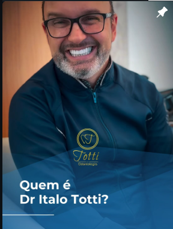
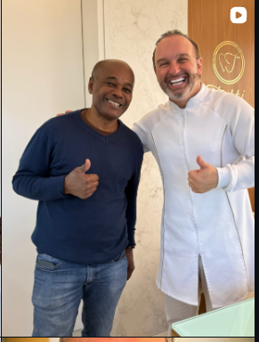
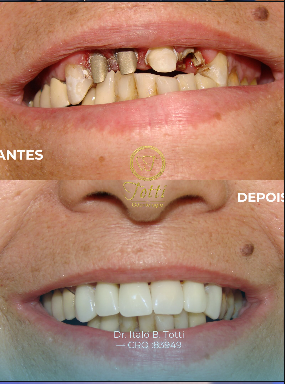
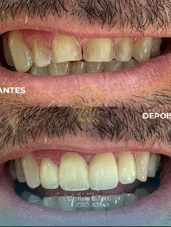
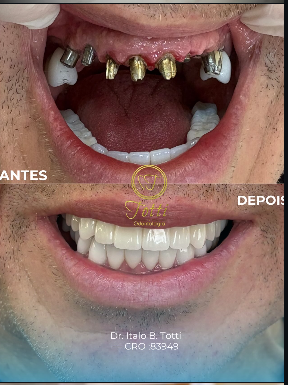
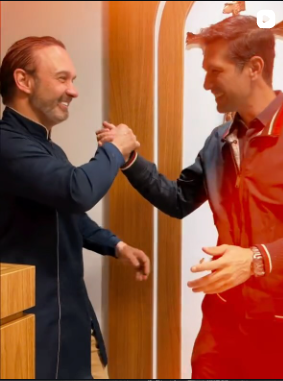

Implantes dentários
Reposição de dentes perdidos com planejamento focado em estabilidade, função e naturalidade.
ODONTOLOGIA • ESTÉTICA • REABILITAÇÃO
Planejamento personalizado, cuidado próximo e odontologia de alto padrão para devolver segurança ao seu sorriso.


QUEM É DR. ÍTALO TOTTI?
Mais do que tratar dentes, o objetivo é compreender o que cada paciente deseja recuperar: conforto, confiança e liberdade para sorrir.
Da primeira conversa ao resultado final, cada caso recebe um plano individual, com atenção à estética, função e naturalidade.
TRATAMENTOS
Uma abordagem individualizada para reconstruir função, estética e confiança.
Reposição de dentes perdidos com planejamento focado em estabilidade, função e naturalidade.
Soluções para recuperar mastigação, harmonia e segurança em casos simples ou complexos.
Planejamento estético personalizado para valorizar seu sorriso sem perder sua identidade.
Protocolos orientados para iluminar o sorriso com acompanhamento profissional.
RESULTADOS REAIS
Cada sorriso tem uma história. Conheça alguns registros compartilhados pela clínica.



UMA EXPERIÊNCIA DIFERENTE
Escuta, clareza e acompanhamento próximo em todas as etapas do tratamento.

SEU NOVO SORRISO COMEÇA AQUI
Converse com a equipe e solicite uma avaliação.
Falar pelo WhatsApp →